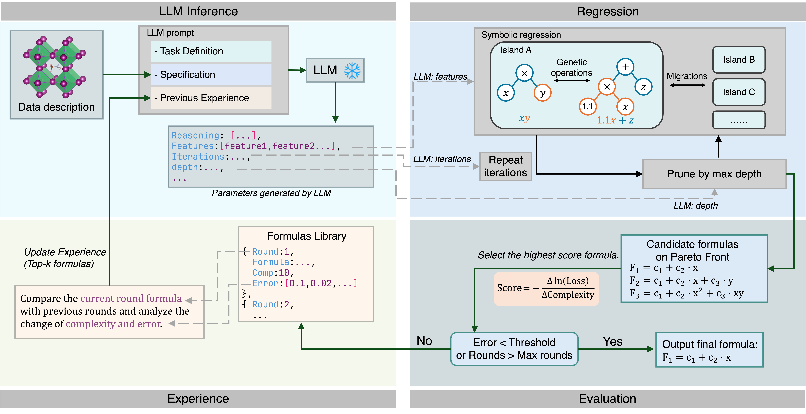

Methods

Discovering interpretable physical laws from high-dimensional data is a fundamental challenge in scientific research. Traditional methods, such as symbolic regression, often produce complex, unphysical formulas when searching a vast space of possible forms. We introduce a framework that guides the search process by leveraging the embedded scientific knowledge of large language models, enabling efficient identification of physical laws in the data. We validate our approach by modeling key properties of perovskite materials. Our method mitigates the combinatorial explosion commonly encountered in traditional symbolic regression, reducing the effective search space by a factor of approximately $10^5$. A set of novel formulas for bulk modulus, band gap, and oxygen evolution reaction activity are identified, which not only provide meaningful physical insights but also outperform previous formulas in accuracy and simplicity.

@misc{guan2026discoveryinterpretablephysicallaws,
title={Discovery of Interpretable Physical Laws in Materials via Language-Model-Guided Symbolic Regression},
author={Yifeng Guan and Chuyi Liu and Dongzhan Zhou and Lei Bai and Wan-jian Yin and Jingyuan Li and Mao Su},
year={2026},
eprint={2602.22967},
archivePrefix={arXiv},
primaryClass={physics.comp-ph},
url={https://arxiv.org/abs/2602.22967},
}